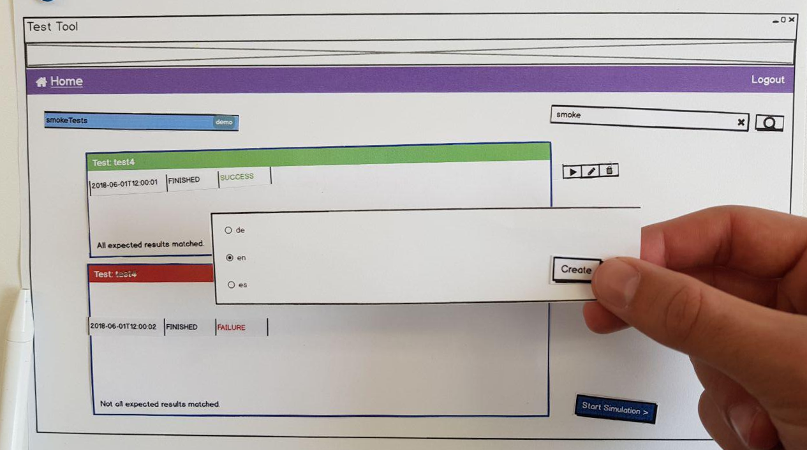

Why you should create a paper prototype - and how to test it with your users
At Zühlke, we strive to work in a lean and agile way. We embrace the uncertainty by starting with a focus on exploring and learning. In interaction design, this can be achieved by creating, testing and iteratively refining a paper prototype.
Why test a paper prototype?
Some of the reasons are:
- Getting the interaction design right should be your first priority: navigation, workflow, organisation of content and the terms used to denote domain elements. Simple black-and-white wireframes help you focus on these issues.
- Action sequences or scenarios are paramount in interaction design. Creating a paper prototype makes you think about these sequences. Will the user understand how to perform the next step? And if so, how can they navigate back?
- A paper prototype helps you get the most relevant feedback as early as possible. Do the users understand the navigation? Did you get their workflow right? Guess what: sometimes you won't have, but all you have to do to improve your design is change some wireframes.
- Starting with a low-fidelity prototype means there’s a natural focus on the big picture. Once the interaction basics have been validated, there will be time to fine-tune all the details of your design.
- Creating a paper prototype allows you to involve your stakeholders in the interaction design and evaluation process. Schedule design sessions with them. Have your stakeholders observe the user tests. You can even change the prototype on the fly while you are testing it!
Creating a paper prototype
Here's the basic workflow:
- Select the scenarios that you would like to test.
- Create a set of wireframes, either directly on paper or using a tool like Balsamiq. Make sure to include all intermediate steps in your wireframes that a user would go through when performing the scenarios.
- If one step involves adding a dialog on top of an existing page, create a wireframe "snippet" that just shows the dialog. This also works for other small changes on a screen.
- The result is a stack of sketched or printed screens and a collection of snippets.


Conducting the test
Let real users of your system test the paper prototype. For a typical early-stage paper prototyping test, five representative users are enough to find the most important issues in your design.
Your goal during the test is to observe users performing the scenarios. It's very much like a regular usability test where you replace the computer with a stack of paper. To prepare the test, write an instruction sheet that asks the users to perform the tasks underlying the scenarios you used for creating the wireframes.
Ideally, one person "plays the computer" and prompts the participant, while another team member takes notes. Explain to the participant that you're testing the design, not them. Each time they get stuck or fail to understand something, you uncover a problem in the interaction design that needs to be fixed. Tell the participant to read the tasks and to perform them in the specified order. Ask them to "use" the wireframes as if they were a real interactive user interface. Finally, ask the participant to "think aloud", so you can follow their thinking process.
Never explain how to use the prototype. Resist the urge to help the participant if they're stuck. Use this opportunity to explore their thinking by asking "What did you expect?" or similar open questions. Only if the participant has been unable to proceed for at least a minute or so is it OK to point out how the task was meant to be performed in the prototype.
Take notes of everything that happens during the test. Protip: Write each observation on a post-it note. After the test, ask the participant to share any observations, opinions or suggestions and write a note for each of them. It's OK to discuss solution ideas at this point.
Evaluating the test
In the team, debrief each session directly after it's finished. What were the three main points to take away from it?
When all the sessions are done, cluster and prioritise your observations. Don't be too formal about this - the most important issues in your prototype will be obvious by now. Each cluster of observations needs to be addressed in your interaction design. So now go ahead and create the next iteration of your paper prototype. Rinse. Repeat.

By Eric Fehse, Manuel Jung